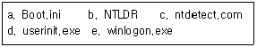
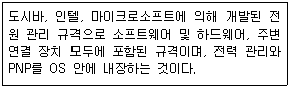
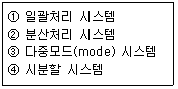
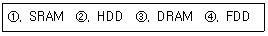
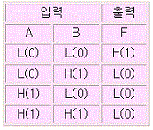
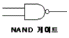
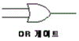
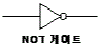
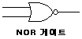
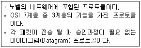

PC정비사-1급 (2010-05-09 기출문제)
1과목: PC운영체제
1. Windows XP에서 기본적으로 제공되는 아웃룩 익스프레스의 특징으로 잘못된 것은?
- 여러 개의 메일 및 뉴스 계정 관리
- 메일을 받은 사람에게 읽음 확인 메일 요청 기능
- 보안 메시지 보내기와 받기
- 실시간 메시지 교환을 위한 Telnet 계정 생성 및 운영
(정답률: 75%)

2. Windows XP의 레지스트리에 대한 설명 중 잘못된 것은?
- 텍스트 기반이며, 크기가 32KB를 넘지 못한다.
- 정렬된 계층구조를 가진다.
- HKey_Users키로 사용자별 정보를 지원한다.
- 원격지에서 관리와 시스템 정책을 할 수 있다.
(정답률: 61%)
3. Windows XP의 빠른 사용자 전환에 대한 설명 중 올바른 것은?
- 이전 사용자의 세션을 모두 자동으로 종료하고 새로운 사용자의 로그인을 시작하게 된다.
- 실질적으로 Windows 98에서 지원하던 사용자 Log off와 똑같이 동작한다.
- 이전 사용자의 세션을 모두 백그라운드로 돌리고 새로운 작업을 할 수 있게 한다.
- 시스템을 종료한 후 빠르게 다시 부팅하여 로그인 한다.
(정답률: 65%)
4. Windows 계열의 운영체제 중 IIS(인터넷 정보 서비스)를 운용할 수 없는 것은?
- Windows 2003
- Windows NT
- Windows XP Professional
- Windows XP Home Edition
(정답률: 84%)
5. Windows XP의 보조프로그램에 대한 설명 중 잘못된 것은?
- 디스크 조각 모음 : 디스크에서 필요 없는 파일을 지울 수 있다.
- 시스템 복원 : 시스템 파일, 레지스트리 키, 설치된 프로그램 등을 특정 복원 시점의 상태로 되돌릴 수 있다.
- 보안 센터 : 사용자의 PC를 보호하기 위해 현재 보안 상태를 확인하고 보안과 관련된 설정을 액세스 할 수 있다.
- 파일 및 설정 전송 마법사 : 한 컴퓨터에서 다른 컴퓨터로 파일 및 시스템 설정을 전송 할 수 있다.
(정답률: 92%)
6. Windows XP에서 사용자 컴퓨터의 부팅 환경을 설정할 수 있는 파일은?
- boot.ini
- boot.sys
- bootlog.txt
- bootlog.sys
(정답률: 85%)
7. Windows XP에서 공유 폴더 설정에 대한 설명 중 잘못된 것은?
- 최대 100명 까지 접근을 허용할 수 있다.
- 공유된 폴더에 접근 할 수 있는 그룹 및 사용자를 지정 할 수 있다.
- 명령 프롬프트에서 'net share'명령으로 컴퓨터의 공유된 전체 폴더를 확인할 수 있다.
- 관리 목적으로 공유된 경우 사용 권한을 설정할 수 없다.
(정답률: 75%)
8. 디스크 어레이(Array) 구축 방식 중 Windows XP에서 구축할 수 없는 것은?
- Raid-0 볼륨
- Raid-1 볼륨
- Raid-4 볼륨
- Raid-5 볼륨
(정답률: 59%)
9. 문자, 음성 및 음향, 그림, 동영상 등의 정보 전달 매개체를 수요자의 요구에 따라 임의적으로 온라인상에서 볼 수 있는 방식은?
- 하이퍼미디어
- 맵핑
- 그래픽 선택 모드
- 온라인 캡쳐
(정답률: 81%)
10. Windows XP의 부팅과 관련된 파일들이다. 부팅 과정에서 진행되는 순서대로 나열된 것은?

- a - b - c - d - e
- b - c - a - d - e
- b - a - c - e - d
- a - e - c - b - d
(정답률: 65%)
11. 다음 설명이 의미하는 용어로 올바른 것은?

- APM(Advanced Power Management)
- ACPI(Advanced Configuration and Power Interface)
- ESCD(Extended System Configuration Data)
- DMI(Desktop Management Interface)
(정답률: 69%)
12. Windows에서 사용되는 파일 확장자와 설명으로 잘못된 것은?
- dll - 실행 파일이 내부적으로 불러서 사용하는 라이브러리 파일
- rtf - 서식 있는 텍스트 파일
- ini - 윈도우 제어판 파일
- pdf - 전자책 형식의 문서 파일
(정답률: 67%)
13. Windows XP에서 [시스템 등록정보 - 장치관리자]의 SCSI 장치에 물음표(？)가 표시 되어 있는 이유로 올바른 것은?
- 장치 오작동
- 장치 충돌
- 드라이버 미설치
- 장치를 사용하지 않도록 설정
(정답률: 80%)
14. Windows XP의 [네트워크 - 로컬 영역 속성]에서 추가 가능한 네트워크 구성요소의 유형으로 잘못된 것은?
- 클라이언트
- 서비스
- 어댑터
- 프로토콜
(정답률: 66%)
15. 운영체제의 발달과정 순서로 올바른 것은?

- ① → ④ → ③ → ②
- ① → ② → ③ → ④
- ① → ③ → ④ → ②
- ④ → ③ → ② → ①
(정답률: 54%)
2과목: PC주변기기
16. 음성 압축 포맷에 대한 설명으로 잘못된 것은?
- ogg 파일은 특허권으로 보호되지 않는 오픈 표준 파일 형식으로 xiph.org 재단에서 개발한 포맷이다.
- MP3 기법을 사용하면 44.1KHz CD음질을 지닌 오디오 사운드 데이터를 1/10이상으로 압축할 수 있다.
- wav 파일은 손실 압축 방식으로, 프로그램 구동음이나 일반 수준의 녹음용으로 사용된다.
- VQF란 NTT에서 개발한 오디오 압축 기술로 MP3 수준의 음질을 들을 수 있다.
(정답률: 49%)
17. 스캐너로 입력한 사진을 컴퓨터로 가져 오기 위해 필요한 드라이버로 올바른 것은?
- IDE
- GUI
- CUI
- TWAIN
(정답률: 80%)
18. 지역 네트워크에 연결된 컴퓨터를 인터넷으로 연결시켜주는 장치이며, 패킷이 지나가야 할 경로를 결정하는 네트워크 장치로 올바른 것은?
- 라우터
- 리피터
- 네트워크 인터페이스 카드(NIC)
- 트랜시버
(정답률: 84%)
19. 주변장치에서 직접 데이터 입?출력을 수행해서 CPU의 부담을 줄여 속도를 향상시키는 기법으로 올바른 것은?
- ISA
- Buffer
- DMA
- E-IDE
(정답률: 87%)
20. 자장의 척력(밀어내는 힘)을 이용하여 근접한 트랙을 동시에 읽어 내는 기술로 올바른 것은?
- MR
- RLL
- FM
- LBA
(정답률: 80%)
21. 파워서플라이의 출력 DC 전압의 종류로 잘못된 것은?
- +3.3V
- +5V
- +10V
- +12V
(정답률: 75%)
22. 디지털 카메라의 CCD(Charged Coupled Device)센서에 관한 설명으로 잘못된 것은?
- 센서에 노출된 이미지를 전기적인 형태로 바꾸어 전송(저장)하는 역할을 담당하는 반도체 기억소자이다.
- R-G-B 센서가 모자이크 방식으로 CCD에 배열되어 있어 인입된 빛의 양을 각 센서가 측정하여 기록하도록 되어 있다.
- 가장 기초적인 CCD기술은 Linear Array(3Pass) 방식이다.
- 필터를 사용하지 않고 반도체 소자가 직접 빛을 받아들인다.
(정답률: 92%)
23. 두 개의 비트맵 장면이 있을 때, 앞에 있는 장면이 투명하게 보이면서 뒤에 있는 장면과 함께 섞여 보이도록 하는 3차원 그래픽 기능을 뜻하는 것은?
- 알파 블렌딩(Alpha-Blending)
- 안개 효과(Fogging)
- 안티 에일리어싱(Anti-Aliasing)
- 바이-리니어 필터링(Bi-linear Filtering)
(정답률: 58%)
24. CISC 프로세서와 RISC 프로세서에 대한 설명 중 잘못된 것은?
- CISC : 다수의 명령어를 동시에 처리하기에 적합하다.
- RISC : CISC 보다 처리 속도가 빠르다.
- CISC : RICS 보다 비싸며 전력 소모가 많다.
- RISC : 고정된 길이의 명령어를 사용한다.
(정답률: 49%)
25. ISO에 의하여 제정된 CD-ROM의 국제 형식 규격이며, 하이 시에라(High Sierra) 규격에 기초를 둔 것은?
- ISO9000
- ISO9002
- ISO9096
- ISO9660
(정답률: 78%)
26. DVD 규격에 따른 용량 연결이 잘못된 것은?
- Single Sided Single Layer (DVD-5) - 약 4.37 GiB
- Single Sided Dual Layer (DVD-9) - 약 7.95 GiB
- Double Sided Single Layer (DVD-10) - 약 12.32 GiB
- Double Sided Dual Layer (DVD-18) - 약 15.90 GiB
(정답률: 68%)
27. HP사가 레이저프린터와 PC간의 통신을 제어하기 위하여 개발한 특수 언어로 올바른 것은?
- ECL
- PCL
- CCD
- ECP
(정답률: 86%)
28. 15핀(3열) D-Sub 커넥터의 핀 번호와 사용 용도 연결이 잘못된 것은?
- 1, 2, 3 - R, G, B 선
- 6, 7, 8 - 접지
- 4, 5, 9 - 핀 없음
- 13, 14 - 수평, 수직 동기
(정답률: 61%)
29. 처리속도가 빠른 것부터 느린 순으로 나열한 것은?

- ① > ② > ③ > ④
- ① > ③ > ② > ④
- ④ > ① > ③ > ②
- ④ > ② > ① > ③
(정답률: 87%)
30. SCSI 방식의 하드디스크를 구입하여 ID를 “10”으로 설정할 경우 A0, A1, A2, A3 네 개의 점퍼 설정으로 올바른 것은? (단, 1은 ON, 0은 OFF)
- 1111
- 0101
- 1011
- 0011
(정답률: 68%)
3과목: 디지털 논리회로
31. 데이터 분배회로로 사용되는 것으로 올바른 것은?
- 인코더(Encoder)
- 시프트레지스터(Shift Register)
- 멀티플렉서(Multiplexer)
- 디멀티플렉서(Demultiplexer)
(정답률: 67%)
32. 플립플롭으로 구성할 수 있는 회로로 잘못된 것은?
- 레지스터
- 카운터
- RAM
- 전가산기
(정답률: 56%)
33. MOS 논리회로의 특징으로 잘못된 것은?
- 소비 전력이 작다.
- 높은 입력 임피던스이다.
- 잡음 여유도가 크다.
- TTL과의 혼용이 매우 용이하다.
(정답률: 64%)
34. 다음 진리표에 해당하는 논리 기호로 올바른 것은?





(정답률: 65%)
35. 멀티플렉서에 대한 설명으로 잘못된 것은?
- 데이터 선택기(Data Selector)기능을 갖는다.
- 일반적으로 2n개의 입력선과 n개의 선택선으로 구성된다.
- 여러 개의 데이터 입력을 적은 수의 채널이나 회선을 통해 전송하는 기술이다.
- 입력값들을 조합하여 특정한 값으로로 출력하는 기술이다.
(정답률: 72%)
4과목: PC유지보수
36. PnP(Plug & Play) 기능에 대한 설명으로 올바른 것은?
- Windows 운영체제에서 하드웨어를 자동으로 인식해주는 기능이다.
- 인터넷 연결 시 자동으로 IP를 설정 해준다.
- 마우스의 왼손잡이와 오른손잡이 설정을 해준다.
- CMOS 셋업을 재설정 해준다.
(정답률: 91%)
37. 주기억장치에 제어 신호와 주소 데이터를 보낸 후 내부의 데이터가 중앙 처리 장치에 도달 할 때까지의 시간으로 올바른 것은?
- Seek Time
- Transmission Time
- Cycle Time
- Access Time
(정답률: 69%)
38. 컴퓨터 조립 후 전원을 켜고 테스트를 할 때 모니터에 아무런 화면도 나타나지 않는 문제의 원인으로 잘못된 것은?
- 전원 공급 장치의 불량
- 하드디스크의 불량
- 램이 제대로 장착되어 있지 않은 경우
- 그래픽 카드가 제대로 연결되어 있지 않은 경우
(정답률: 93%)
39. 컴퓨터 조립 시 각종 케이블 연결에 대한 설명으로 올바른 것은?
- 전원 스위치, 리셋 스위치는 커넥터에 반대로 연결해도 된다.
- LED와 스피커는 반대로 꽂아도 상관없다.
- 전원 스위치, 리셋 스위치는 커넥터에 반대로 연결하면 동작하지 않는다.
- IDE 하드디스크와 CD-ROM의 전원 케이블은 6핀으로 극성을 가지지 않는다.
(정답률: 79%)
40. 컴퓨터를 장시간 사용하지 않아 시스템 바이오스의 정보가 이전 상태와 같이 나타나지 않는 경우, 점검해야 하는 것으로 올바른 것은?
- 키보드 컨트롤러
- 캐시
- 배터리
- CPU
(정답률: 82%)
41. 모니터 화면에 붉은색과 녹색이 구분되지 않는 경우 점검해야할 사항으로 잘못된 것은?
- 모니터를 다른 모니터와 교체해 본다.
- 디스플레이 설정을 트루 칼라로 맞춘다.
- 그래픽 카드를 교체해 본다.
- 시그널 케이블을 교체해 본다.
(정답률: 64%)
42. 바이러스 침투를 막기 위해 부트섹터와 파티션 테이블에 기록이 되지 않도록 하는 Anti Virus Protection이 포함되어있는 Award BIOS의 메뉴로 올바른 것은?
- Standard CMOS Setup
- BIOS Features Setup
- Chipset Features Setup
- Power Management Setup
(정답률: 65%)
43. EMI에 대한 설명으로 잘못된 것은?
- EMI는 미국이나 EU각국이 마련한 전자파 관련 규정 중의 하나이다.
- EMI 인증을 받은 기기는 무선 통신 기능을 사용할 수 없다.
- 국내에서는 90년대 중반부터 각종 전기전자 제품에 대한 EMI 검증을 실시하고 있다.
- 전자파에 관한 장애 인증이다.
(정답률: 78%)
44. 모니터와 그래픽 카드 설정 및 사용 방법으로 잘못된 것은?
- 모니터 크기를 고려하여 해상도를 설정한다.
- 눈이 피곤하지 않도록 화면 주사율은 가장 낮은 주파수로 설정해서 사용한다.
- 장치에 맞는 드라이버를 설치해서 사용한다.
- 컴퓨터에 문제가 없으면 그래픽 하드웨어 가속 수준은 최대로 설정한다.
(정답률: 80%)
45. PnP 기능을 지원하는 운영체제가 PnP를 지원하는 주변장치를 인식하는 방법은?
- PnP 장치의 고유한 IP Address
- PnP 장치의 고유한 MAC Address
- PnP 장치의 고유한 PnP ID
- PnP 장치의 고유한 Processor Number
(정답률: 54%)
46. E-IDE 하드디스크를 추가 설치하였으나 인식이 되지 않는경우 점검 사항으로 잘못된 것은?
- 디스크 Cable들이 올바르게 연결되어 있는지 검사한다.
- CMOS Setup에서 하드디스크 설정을 점검한다.
- 하드디스크 점퍼 스위치가 올바르게 설정 되어있는지 점검한다.
- 기존 디스크가 올바르게 Partition이 되어있는지 점검한다.
(정답률: 88%)
47. Windows XP에서 보호된 시스템 파일을 검색하는 명령어로 올바른 것은?
- sfc /scannow
- scanreg /restore
- sys A:C:
- convert C:/FS:NTFS/X
(정답률: 81%)
48. 인터넷에서 음성이나 영상, 애니매이션 등을 실시간으로 재생 가능하도록 하는 기법으로 올바른 것은?

- 멀티태스킹 (Multitasking)
- 미러링 (Mirroring)
- 스트리밍 (Streaming)
- 스풀링 (Spooling)
(정답률: 80%)
49. 두 개 이상의 하드디스크에 있는 할당되지 않은 공간영역을 하나의 논리 볼륨으로 결합하여 효율적으로 사용할 수 있는 것으로, 첫 번째 디스크에 데이터가 쓰여지고 첫 번째 디스크가 꽉차면 다음 디스크에 연속된 공간처럼 쓰여지는 볼륨은?
- 단순볼륨
- 스팬볼륨
- 스트라이프볼륨
- 미러볼륨
(정답률: 70%)
50. 부팅 시 나타나는 에러 메시지 중 RAM과 관련이 없는 것은?
- Memory parity error
- 8042-Gate A20 Failure
- Base 64KB Memory Failure
- Refresh Failure
(정답률: 85%)
5과목: PC네트워크
51. 인터넷 메일 호스트 사이에 멀티미디어 데이터를 아스키 형식으로 변환할 필요 없이 인터넷 전자우편으로 송신하기 위한 인터넷 표준으로 올바른 것은?
- SMTP
- POP
- IMAP
- MIME
(정답률: 35%)
52. 프로토콜의 기능 중 상위 계층으로 부터 받은 데이터에 자신의 제어정보를 추가하는 기능으로 올바른 것은?
- 캡슐화(Encapsulation)
- 조립(Assembly)
- 동기화(Synchronization)
- 다중화(Multiplexing)
(정답률: 78%)
53. 라우터에서 패킷의 전달을 위해 참조되는 헤더정보로 올바른 것은?
- 출발지 네트워크 주소
- MAC 주소
- BDC 주소
- 목적지 네트워크 주소
(정답률: 52%)
54. 인터넷 프로토콜 중 데이터의 흐름을 관리하고 데이터가 정확한지 검사하는 것은?
- POP3
- SPX
- TCP
- IP
(정답률: 78%)
55. 데이터링크 계층에서 로컬 네트워크에 있는 호스트를 찾을 때 이용하는 것으로 올바른 것은?
- 포트번호
- MAC Address
- 디폴트 게이트웨이
- IP Address
(정답률: 59%)
56. 패킷 스위칭 기법에 대한 설명으로 잘못된 것은?
- 패킷은 통신회선과 패킷스위치를 통해 전달된다.
- store-and-forward 전송방식을 이용한다.
- 링크에 도착한 패킷을 저장하기 위한 버퍼가 필요없다.
- 패킷스위칭은 일반적으로 통계적 다중화(Statistical Multiplexing)를 이용한다.
(정답률: 84%)
57. 스위치에 대한 설명으로 올바른 것은?
- 스위치는 네트워크 계층 중 물리계층에 속한다.
- 다른 네트위크 영역 사이의 통신 연결시 사용된다.
- 스위치에 연결된 포트를 1:1로 연결하기 때문에, 각 포트에 스위치에서 제공하는 최대 속도를 보장해 준다.
- 목적지가 아닌 포트에도 프레임을 전달한다.
(정답률: 72%)
58. 다음 내용에 해당하는 프로토콜로 올바른 것은?(문제 오류로 내용이 누락되었습니다. 정답은 4번입니다.)
- SNMP
- X.25
- ICMP
- IPX
(정답률: 70%)
59. 인터넷을 이용한 전자 상거래에서 멀티미디어 콘텐츠의 지적 소유권 보호를 위해 콘텐츠에 사용자 정보를 숨겨 저작권 및 소유권을 보호하는 방법으로 올바른 것은?
- Watermarking
- Encryption
- PGP(Pretty Good Privacy)
- SHTTP(Secure-HTTP)
(정답률: 79%)
60. 서비스와 Well-Known Port(잘 알려진 포트)의 연결이 올바른 것은?
- POP3 - TCP 21
- FTP - TCP 25
- HTTP - TCP 80
- DNS - TCP 110
(정답률: 80%)